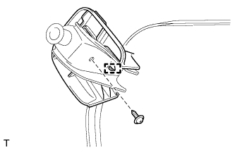
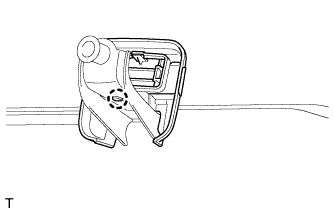
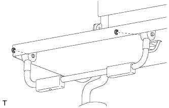
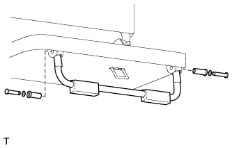
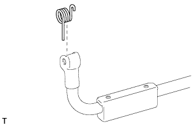
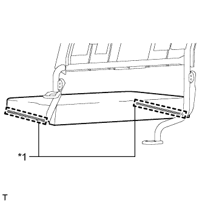
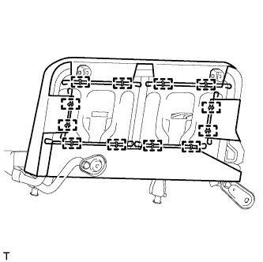
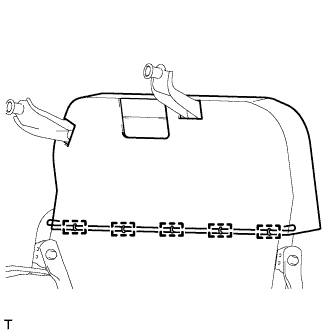
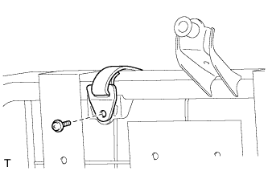
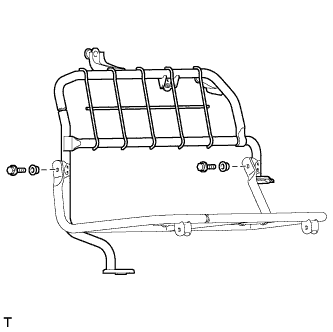

ЗАДНЕЕ СИДЕНЬЕ № 2 В СБОРЕ (для моделей с противоположно расположенными сиденьями) > РАЗБОРКА |
| 1. СНИМИТЕ ЩИТОК КРОНШТЕЙНА НОЖКИ ЗАДНЕГО СИДЕНЬЯ № 1 |
|  |
Выверните винт.
| *1 | Направляющая |
Отсоедините направляющую и снимите щиток.
| 2. СНИМИТЕ ЩИТОК КРОНШТЕЙНА НОЖКИ ЗАДНЕГО СИДЕНЬЯ № 2 |
|  |
Отцепите захват и снимите крышку.
| 3. СНИМИТЕ НОЖКУ ПОДУШКИ ЛЕВОГО ЗАДНЕГО БОКОВОГО СИДЕНЬЯ № 1 В СБОРЕ |
|  |
С помощью отвертки снимите 2 разрезных уплотнения.
|  |
Снимите 2 штифта и 2 шайбы.
Снимите 2 распорные втулки и ножку подушки сиденья.
|  |
Снимите пружину с ножки подушки сиденья.
| 4. СНИМИТЕ ОБИВКУ ПОДУШКИ СИДЕНЬЯ ВМЕСТЕ С ПОДУШКОЙ |
|  |
Откройте 2 застежки.
| *1 | Фиксатор |
|  |
Снимите витковые пружины и обивку подушки сиденья с подушкой.
| 5. СНИМИТЕ ОБИВКУ ПОДУШКИ ЛЕВОГО ЗАДНЕГО БОКОВОГО СИДЕНЬЯ В СБОРЕ |
Снимите обивку подушки сиденья с подушки сиденья.
| 6. СНИМИТЕ ОБИВКУ СПИНКИ СИДЕНЬЯ ВМЕСТЕ С ПОДУШКОЙ |
|  |
Снимите витковые пружины и обивку спинки сиденья с подушкой.
| 7. СНИМИТЕ БОКОВОЙ ОГРАНИЧИТЕЛЬ ЗАДНЕГО СИДЕНЬЯ В СБОРЕ |
|  |
Выверните винт и снимите ограничитель сиденья.
| 8. СНИМИТЕ ОБИВКУ СПИНКИ ЛЕВОГО ЗАДНЕГО БОКОВОГО СИДЕНЬЯ В СБОРЕ |
Снимите обивку спинки сиденья с подушки спинки сиденья.
| 9. СНИМИТЕ РАМУ СПИНКИ ЛЕВОГО ЗАДНЕГО БОКОВОГО СИДЕНЬЯ В СБОРЕ |
|  |
Выверните 2 болта.
Снимите 2 втулки и раму спинки сиденья.